Before and after
Kept: links 27/27, fields 9/9, handlers 479/479, headings 25/25, figures 11/11. Floor findings: 1024 before, 1055 now. Reflex findings: 81 before, 14 now.
127.0.0.1-5173
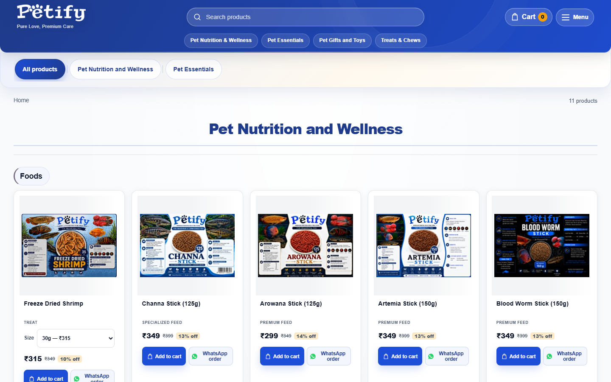
Before, first screen at 1440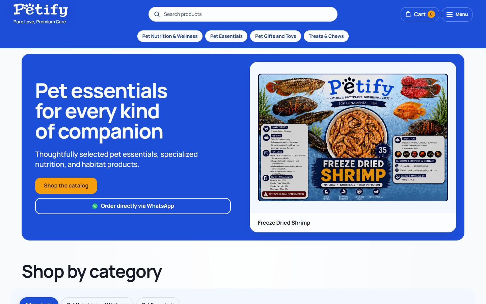
After, first screen at 1440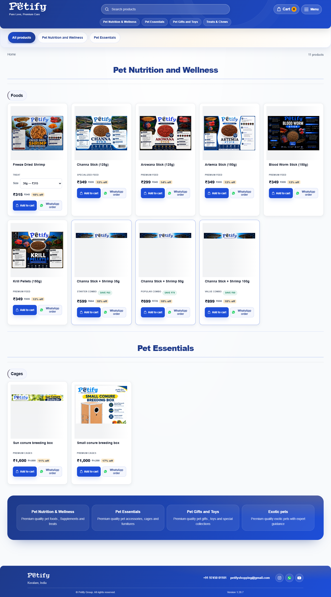
Before, whole page at 1440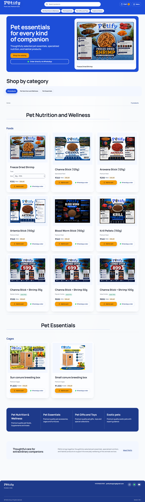
After, whole page at 1440Before, whole page on a phoneAfter, whole page on a phone
127.0.0.1-5173-about
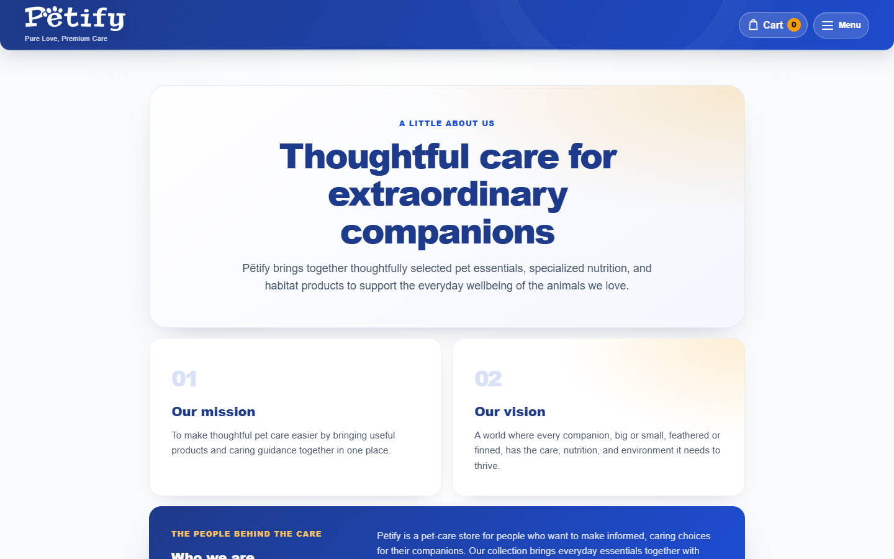
Before, first screen at 1440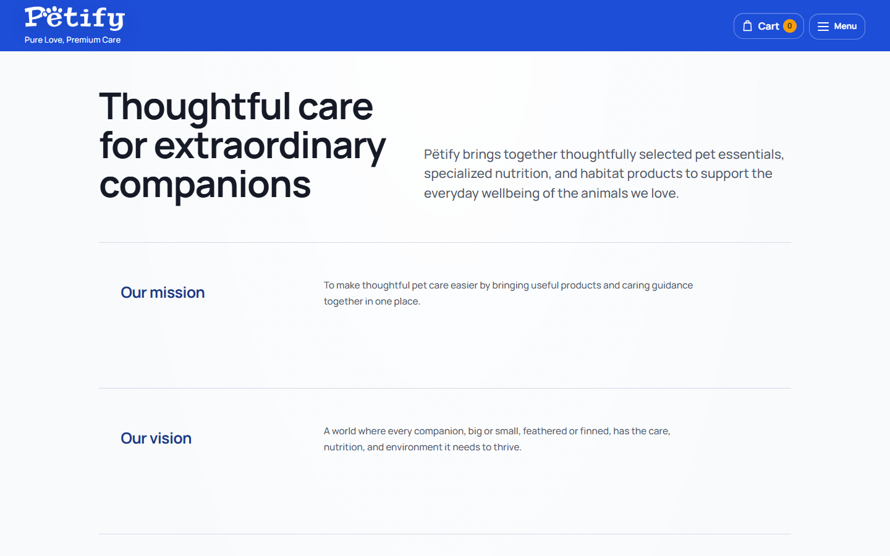
After, first screen at 1440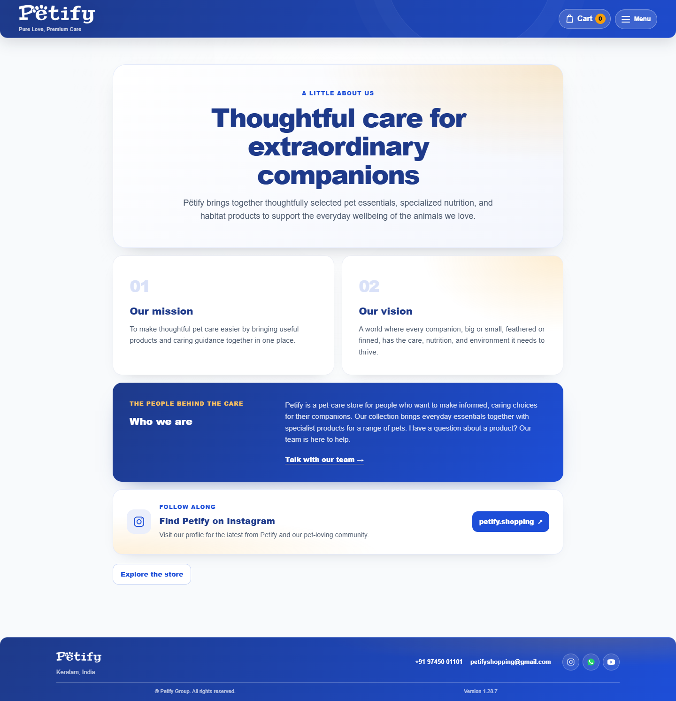
Before, whole page at 1440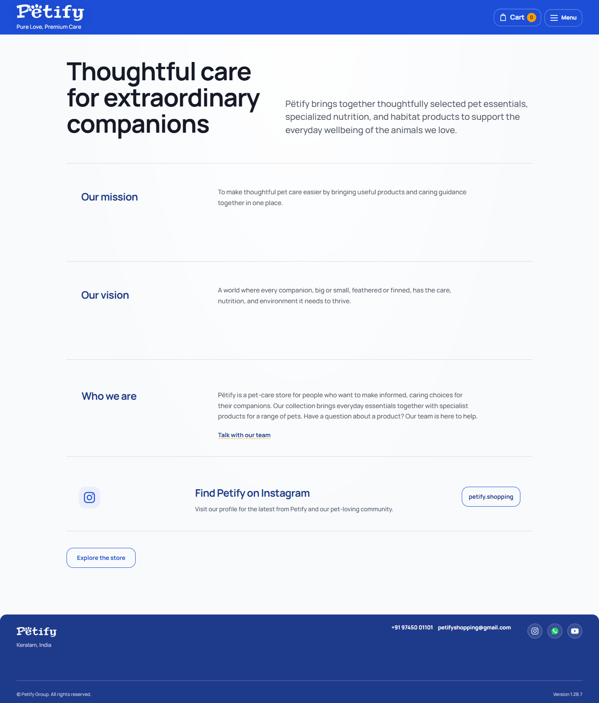
After, whole page at 1440Before, whole page on a phoneAfter, whole page on a phone
127.0.0.1-5173-admin
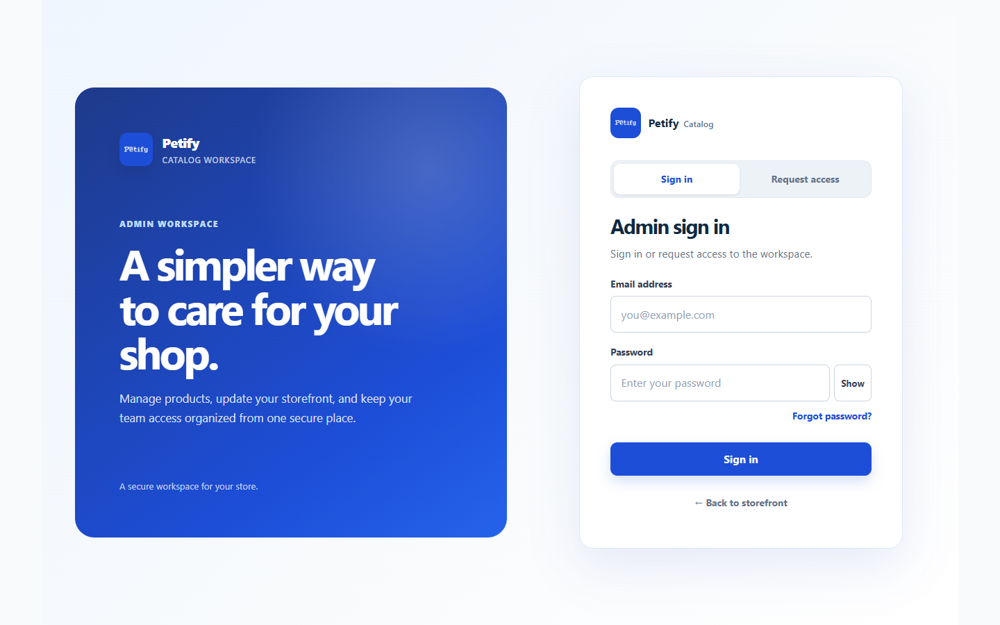
Before, first screen at 1440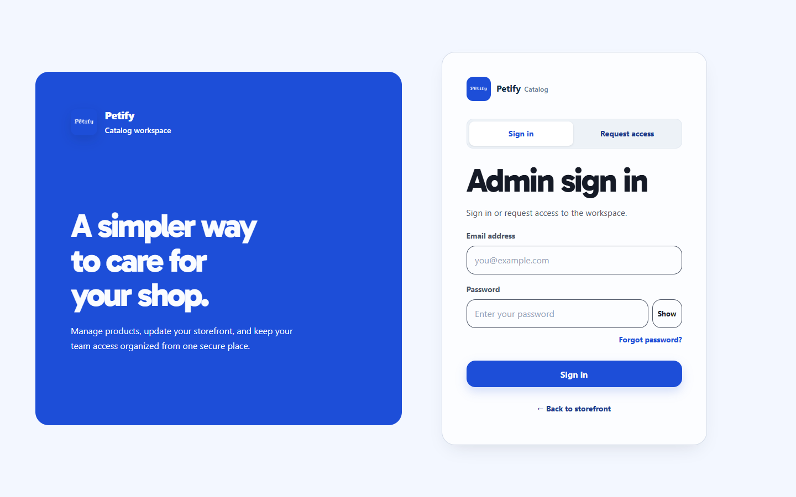
After, first screen at 1440 Before, whole page at 1440
Before, whole page at 1440 After, whole page at 1440
After, whole page at 1440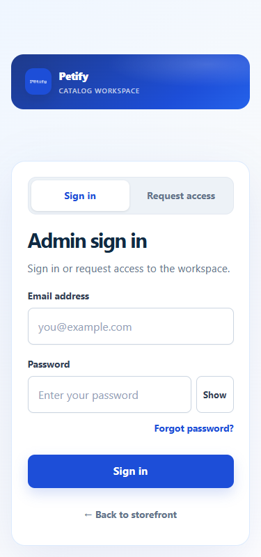
Before, whole page on a phone After, whole page on a phone
After, whole page on a phone127.0.0.1-5173-petify-dashboard
Before, first screen at 1440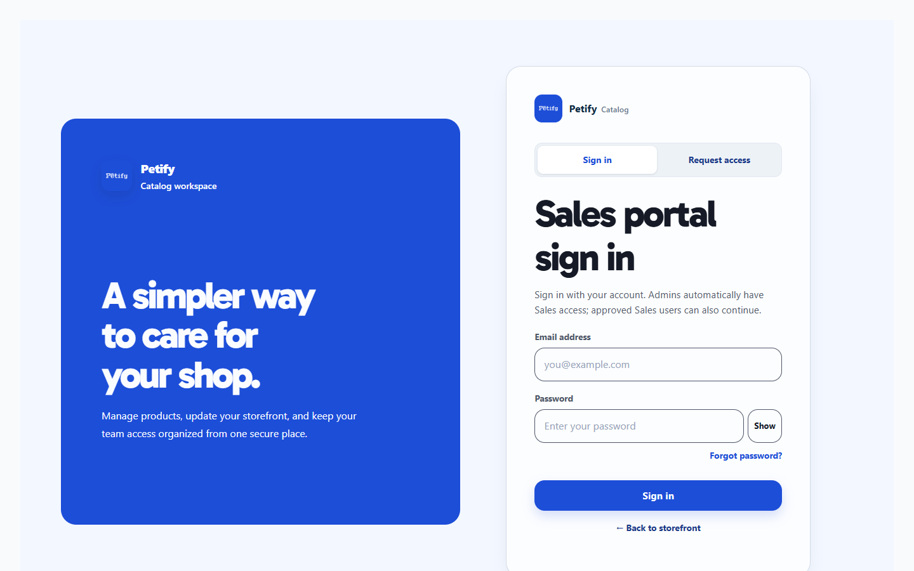
After, first screen at 1440  Before, whole page at 1440
Before, whole page at 1440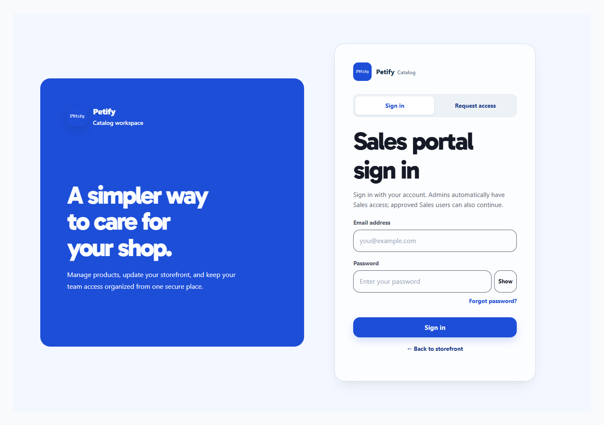
After, whole page at 1440Before, whole page on a phone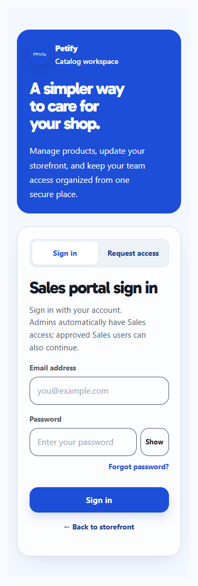
After, whole page on a phone